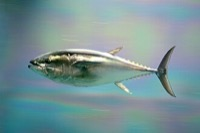

くろまぐろ（黒鮪）の漁獲量 都道府県ランキング
1位から3位までと、とれた量
くろまぐろが日本でいちばん多くとれるのは長崎県です。1,806 tで、全国（1万3,131 t）の14%を占めます。

| 順位 | 都道府県 | 漁獲量 | 全国に占める割合 |
|---|---|---|---|
| 1位 | 長崎県 | 1,806 t | 14% |
| 2位 | 青森県 | 1,550 t | 12% |
| 3位 | 宮城県 | 1,154 t | 8.8% |
この数字について
- 分類：鮪の仲間
- 全国の漁獲量：1万3,131 t
- この数字が表すもの：漁獲量（海でとれた重さ。養殖は含みません）
- 調査：海面漁業生産統計調査（海面漁業） 令和5年
- 34県分を調査（調査していない県は順位に入りません）
くろまぐろの漁獲量について、よくある質問
- くろまぐろの漁獲量が日本一の都道府県はどこですか？
- 長崎県です。海面漁業生産統計調査（海面漁業）（令和5年）で1,806 tでした。
- くろまぐろの漁獲量ランキング2位・3位はどこですか？
- 2位は青森県（1,550 t）、3位は宮城県（1,154 t）です。
- くろまぐろの全国の漁獲量はどれくらいですか？
- 1万3,131 t（令和5年）です。